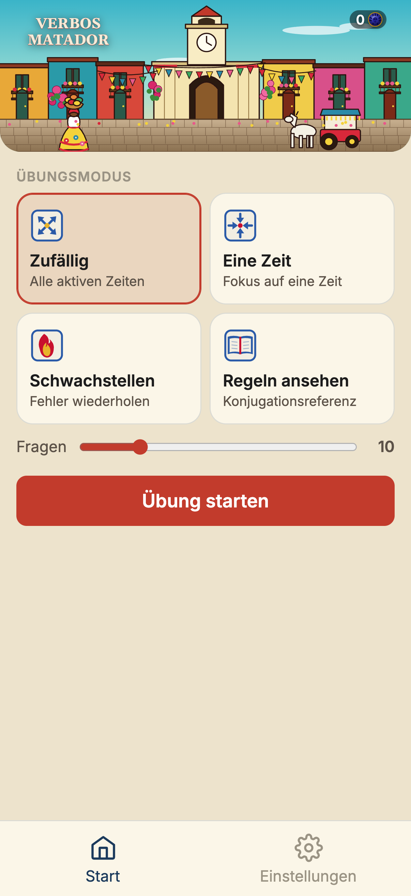
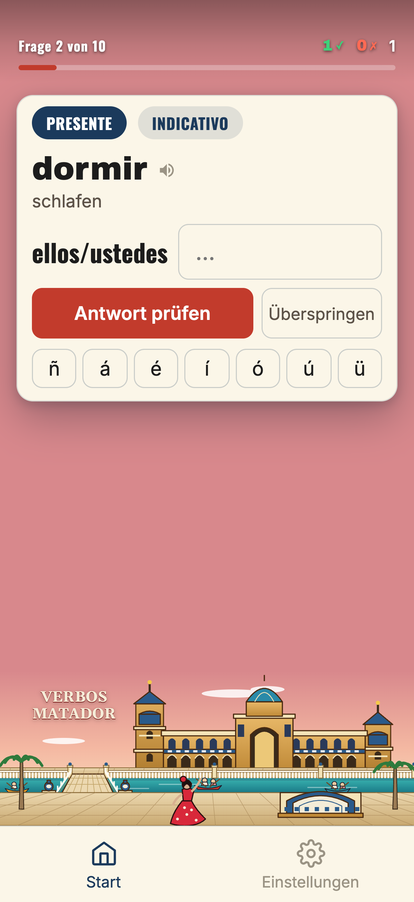
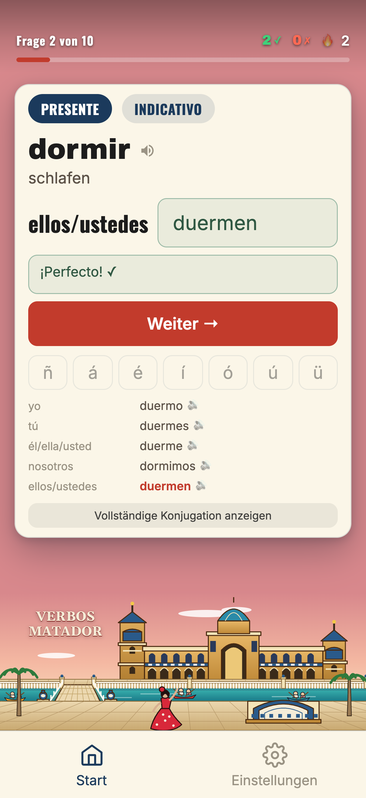
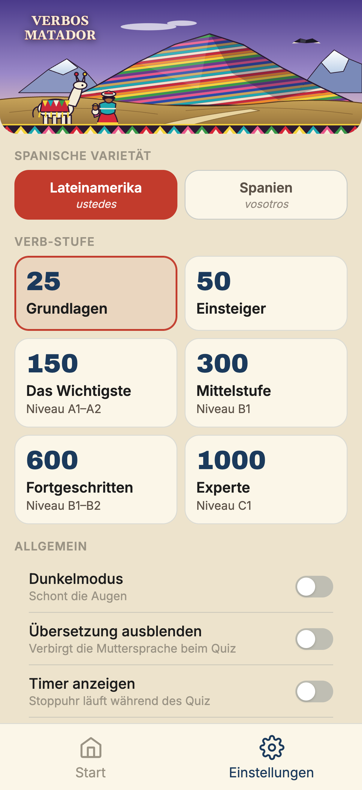
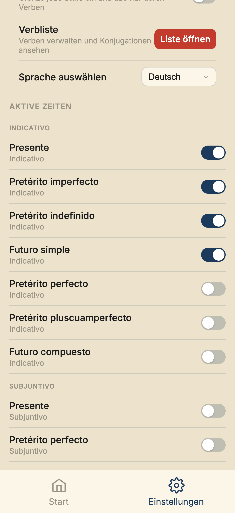
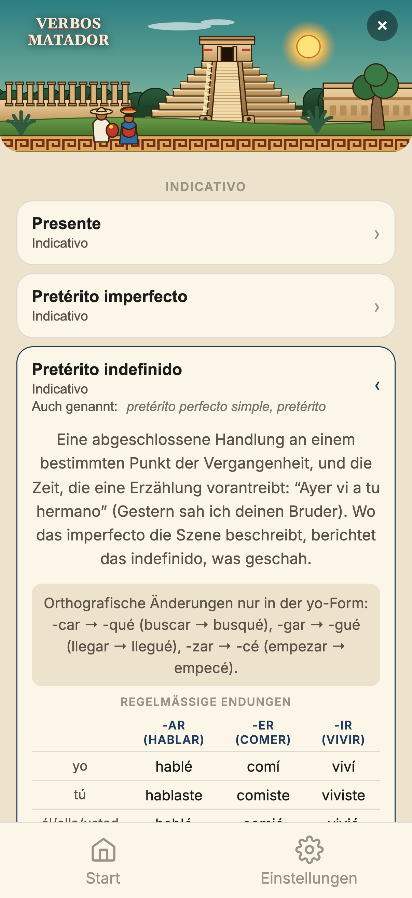
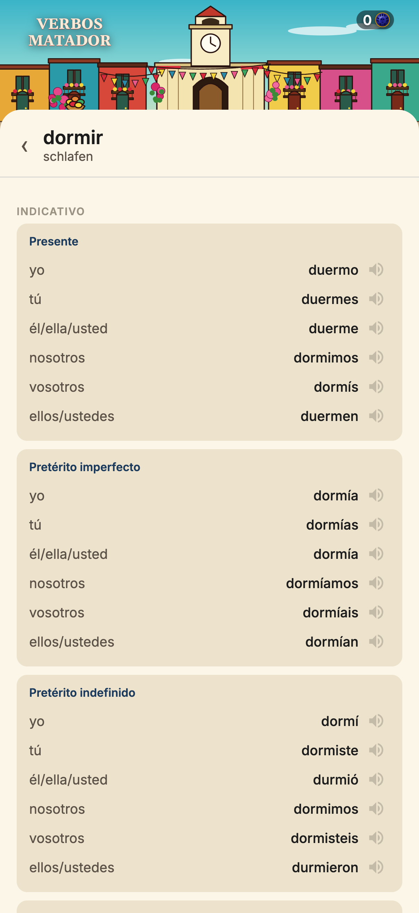
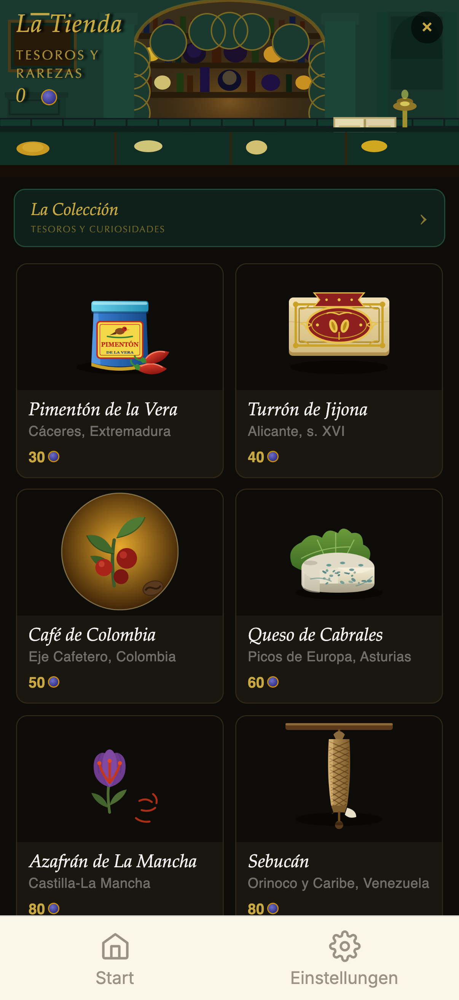

Verbos Matador
Trainer für spanische Verbkonjugation von Tuffyred LLC


Ein Blick hinein








Diese Übersetzung dient nur der Verständlichkeit. Bei Abweichungen ist die englische Fassung maßgeblich und rechtlich verbindlich. Englische Fassung lesen →
Überblick
Diese App konzentriert sich auf die schwierigsten Aspekte beim Spanischlernen: das Beherrschen der Verbkonjugationen. Mit Wiederholung und ein wenig Bestechung gibt dir Verbos Matador ein Werkzeug, um Konjugationen in kurzen Quizrunden zu üben, und macht aus der Plackerei ein schnelles, befriedigendes Training, das du wirklich öffnen willst.
- Übe genau das, was du brauchst. Wähle, an welchen der 19 Zeiten und Modi du arbeiten möchtest, vom alltäglichen presente bis zu den kniffligsten subjuntivo und condicional, oder konzentriere dich auf eines nach dem anderen.
- Nimm dir deine Schwachstellen vor. Ein eigener Schwachstellen-Modus merkt sich genau die Verben und Zeiten, die du falsch hast, und übt sie, bis sie sitzen.
- Blende die Übersetzung aus. Verdecke die Bedeutung und trainiere Verständnis und Konjugation zugleich.
- Hör es gesprochen. Aussprache für jede Konjugation auf Geräten mit Sprachausgabe.
- Sammle, während du lernst. Verdiene Punkte für richtige Antworten und gib sie in La Tienda für 41 Schätze aus der spanischsprachigen Welt aus, jeder mit eigenem Foto und eigener Geschichte. Der Shop läuft mit den Punkten, die du verdienst, nie mit echtem Geld.
- Vollständige Nachschlagewerke: eine Beschreibung jeder Zeit, wie sie verwendet wird und ihre regelmäßigen Endungen, dazu eine komplette Konjugationstabelle für jedes Verb in jeder Zeit.
NOCH MEHR HIGHLIGHTS
- Stufen nach Häufigkeit (A1 bis C1): Lerne zuerst die nützlichsten Verben, bis hinauf zu 1.000.
- Sechs App-Sprachen: English, Español, Français, Deutsch, Português, Italiano.
- Eine Tastenreihe legt das ñ und die Vokale mit Akzent einen Tipp weit entfernt, und Antworten werden mit oder ohne Akzente akzeptiert.
- Lateinamerika oder Spanien: Ein Schalter blendet das vosotros ein oder aus, und einige Wörter, die sich zwischen beiden unterscheiden, werden berücksichtigt.
- Serien (Streaks), ein optionaler Timer und einstellbare Sitzungslänge.
- Erstelle deine eigene Verbliste: Schließe aus, was du schon beherrschst.
- 100% offline. Kein Konto, keine Anmeldung, kein Tracking, keine Werbung.
Einmalig bezahlen. Jede Stufe und jede Zeit ist vom ersten Start an freigeschaltet, ohne Abo und ohne In-App-Käufe.
Buena suerte. Diese Verben haben keine Chance.
Fragen, Feedback oder Probleme mit der App? Wir freuen uns, von dir zu hören.
Schreib uns an contact@tuffyred.com
Datenschutzerklärung
Zuletzt aktualisiert: 5. Oktober 2026Tuffyred LLC (“wir” oder “uns”) betreibt die mobile Anwendung Verbos Matador (die “App”). Diese Erklärung erläutert, welche Informationen wir erheben und wie wir sie verwenden.
Von uns erhobene Informationen
Verbos Matador erhebt, speichert und übermittelt keinerlei personenbezogene Daten. Sämtliche Quizfortschritte, Einstellungen und Präferenzen werden lokal auf deinem Gerät gespeichert und niemals an unsere Server oder an Dritte gesendet.
Käufe
Verbos Matador ist eine kostenpflichtige App mit einem einmaligen Kauf. Sie enthält keine In-App-Käufe und keine Werbung. Dein Kauf wird ausschließlich von Apple (App Store) oder Google (Google Play) abgewickelt; Tuffyred LLC erhält oder speichert deine Zahlungsdaten nicht. Wie diese mit Kaufdaten umgehen, entnimmst du bitte den Datenschutzerklärungen von Apple bzw. Google.
Datenschutz für Kinder
Verbos Matador erhebt wissentlich keine personenbezogenen Daten von irgendjemandem, einschließlich Kindern unter 13 Jahren. Die App enthält weder Werbung noch eine Kontoregistrierung.
Änderungen dieser Erklärung
Wir können diese Erklärung von Zeit zu Zeit aktualisieren. Etwaige Änderungen werden auf dieser Seite mit einem aktualisierten Datum veröffentlicht. Die fortgesetzte Nutzung der App nach Änderungen gilt als Zustimmung zur überarbeiteten Erklärung.
Kontakt
Bei Fragen zu dieser Erklärung kontaktiere uns unter contact@tuffyred.com
Nutzungsbedingungen
Zuletzt aktualisiert: 5. Oktober 2026Bitte lies diese Nutzungsbedingungen (“Bedingungen”) sorgfältig durch, bevor du die von Tuffyred LLC (“wir” oder “uns”) betriebene Anwendung Verbos Matador verwendest.
Nutzung der App
Verbos Matador wird für den persönlichen, nicht kommerziellen Bildungsgebrauch bereitgestellt. Du darfst keinen Teil der App kopieren, verändern, verbreiten oder zurückentwickeln.
Käufe
Verbos Matador ist ein einmaliger kostenpflichtiger Kauf und bietet keine In-App-Käufe. Alle Verkäufe sind endgültig, sofern nicht durch geltendes Recht anders vorgeschrieben. Käufe werden über den Apple App Store oder Google Play Store abgewickelt, und deren Rückerstattungsrichtlinien gelten.
Gewährleistungsausschluss
Die App wird “wie besehen” ohne jegliche Gewährleistung bereitgestellt. Wir übernehmen keine Garantie dafür, dass die App fehlerfrei oder ununterbrochen funktioniert. Bildungsinhalte (Verbkonjugationen, Übersetzungen) werden zu Lernzwecken bereitgestellt und können Ungenauigkeiten enthalten.
Haftungsbeschränkung
Soweit gesetzlich zulässig, haftet Tuffyred LLC nicht für indirekte, beiläufige oder Folgeschäden, die sich aus deiner Nutzung der App ergeben.
Anwendbares Recht
Diese Bedingungen unterliegen dem Recht der Vereinigten Staaten. Etwaige Streitigkeiten werden in der Gerichtsbarkeit beigelegt, in der Tuffyred LLC tätig ist.
Änderungen dieser Bedingungen
Wir behalten uns das Recht vor, diese Bedingungen jederzeit zu ändern. Die fortgesetzte Nutzung der App nach Änderungen gilt als Zustimmung zu den überarbeiteten Bedingungen.
Kontakt
Bei Fragen zu diesen Bedingungen kontaktiere uns unter contact@tuffyred.com